Calculating Line Lengths and Statistics
[ Download PDF A4 Letter ]
QGIS has built-in functions to calculate various properties based on the
geometry of the feature - such as length, area, perimeter etc. This tutorial
will show how to use Field Calculator to add a column with a value
representing length of each feature.
Overview of the task
We will use a polyline shapefile of railroads in North America and try to
determine the total length of railroads in the United States.
Other skills you will learn
- Using expressions to select features.
- Re-projecting a layer from Geographic to Projected Coordinate Reference
System(CRS).
- Viewing statistics for values of an attribute in a layer.
Procedure
- Go to .

- Browse to the ne_10m_railroads_north_america.zip file and click
OK.
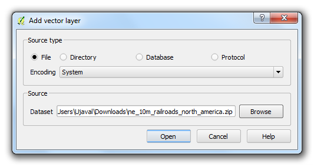
- In the Select layers to add... dialog, choose
ne_10m_railroads_north_america.shp layer.

- Once the layer is loaded, you will notice that the layer has lines
representing railroads for all of North America. Since we want to calculate
line lengths only for United States railroads, we need to select the lines
that fall in the United States. Right-click on the layer and select
Open Attribute Table.
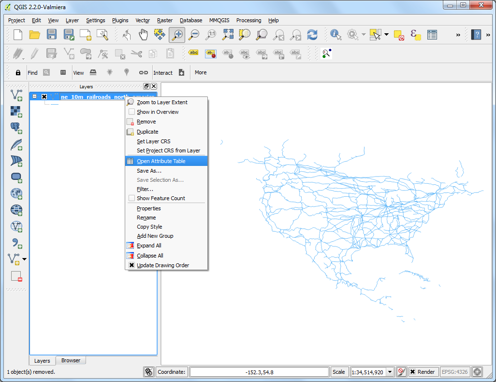
- The layer has an attribute called sov_a3. This is the 3 letter
code for the country that a particular feature falls in. We can use the
value of this attribute to select features that are in USA.
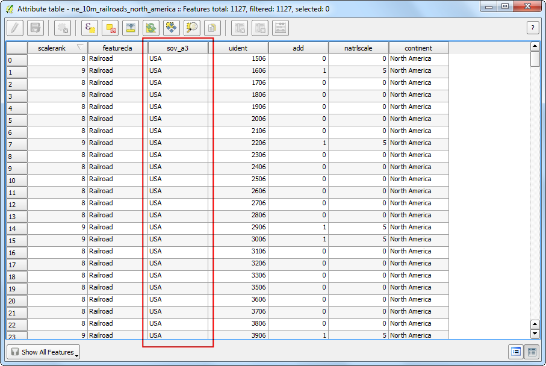
- In the Attribute Table window, click the Select
features using an expression button.
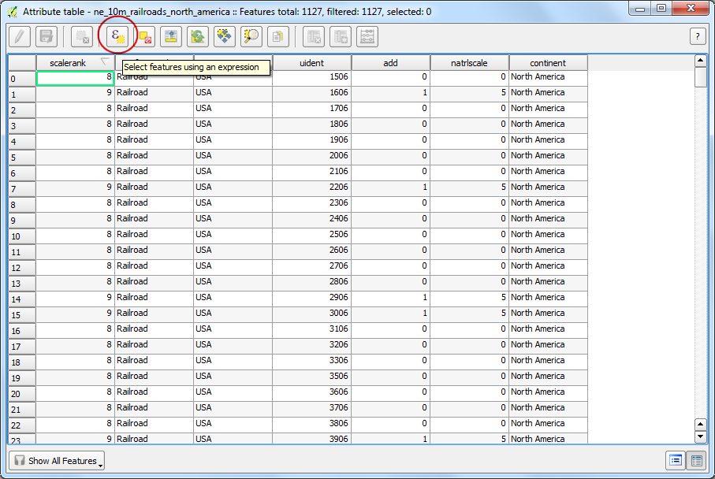
- A new dialog Select By Expression will open. Find the attribute
sov_a3 under Fields and Values in the
Functions list section. Double-click on it to add it to the
Expression text area. Complete the expression by typing in
"sov_a3" = 'USA'. Click Select followed by
Close.
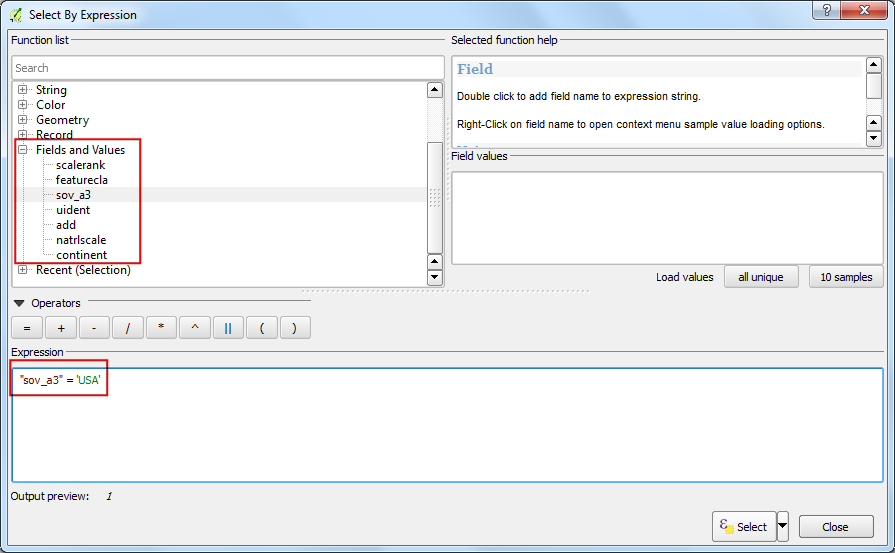
- Back in the main QGIS window, you will see that all lines that fall in USA
are selected and appear in yellow.
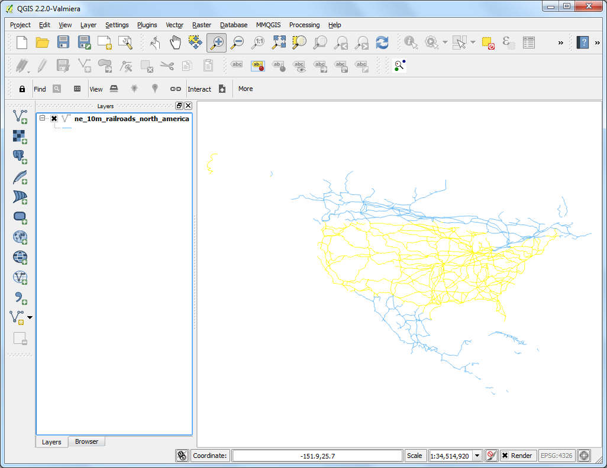
- Now let’s save our selection to a new shapefile. Right-click on the
ne_10m_railroads_north_america layer and select Save
Selection As....
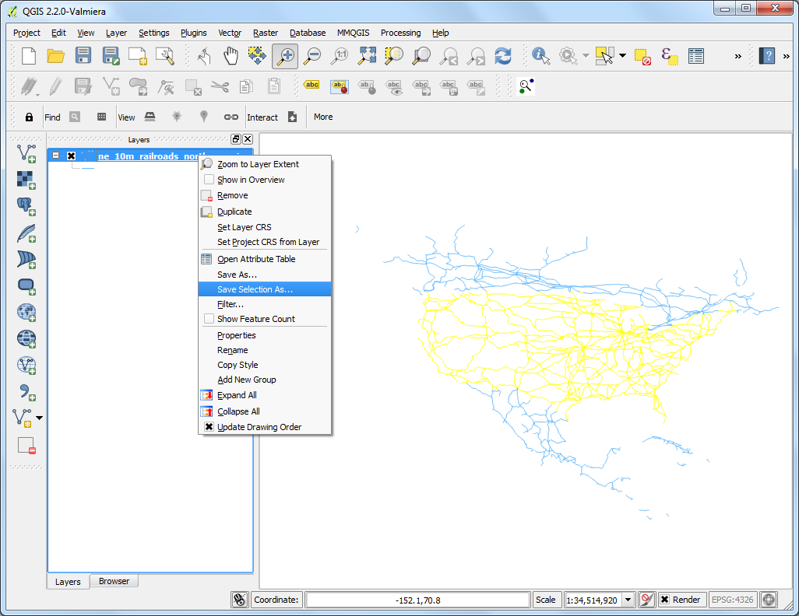
- Click Browse and name the output file as usa_railroads.shp.
We also want to change the CRS of the layer. Click on Browse
next to CRS.
Nota
The built-in functions that use a feature’s geometry for calculation use the
units of the layer’s CRS. Geographic Coordinate Reference System(CRS) such
as EPSG:4326 have degrees as units - so the length of the feature
would be in degrees and area in square degrees - which is
meaningless. You need to use a Projected Coordinate Reference System with
units of meters or feet to perform such calculations.
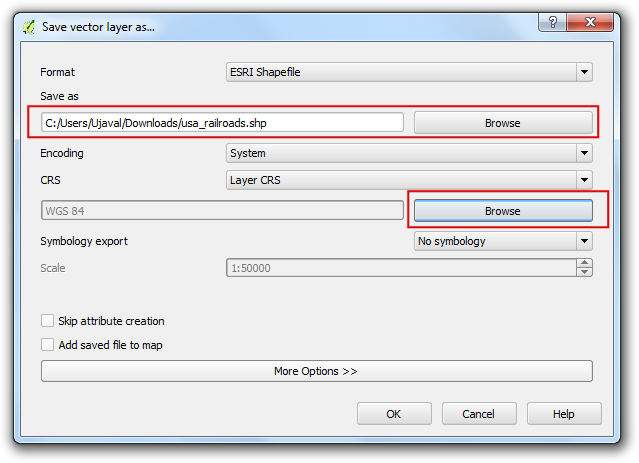
- Since we are interested in calculating length, let’s select an equidistance
projection. Type north america equ in the Filter
search box. In the results pane below, select
North_America_Equidistant_Conic EPSG:102010 as the CRS. Click
OK.
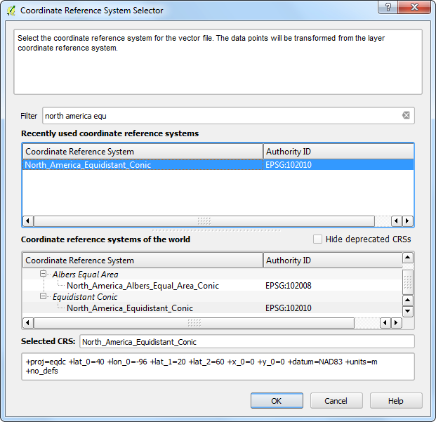
- In the Save vector layer as... dialog, check the Add
saved file to map and click OK.
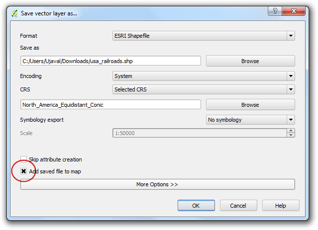
- Once the export process finishes, you will see a new layer usa_railroads
loaded in QGIS. You can uncheck the box next to
ne_10m_railroads_north_america layer to turn it off as we don’t need it
anymore.
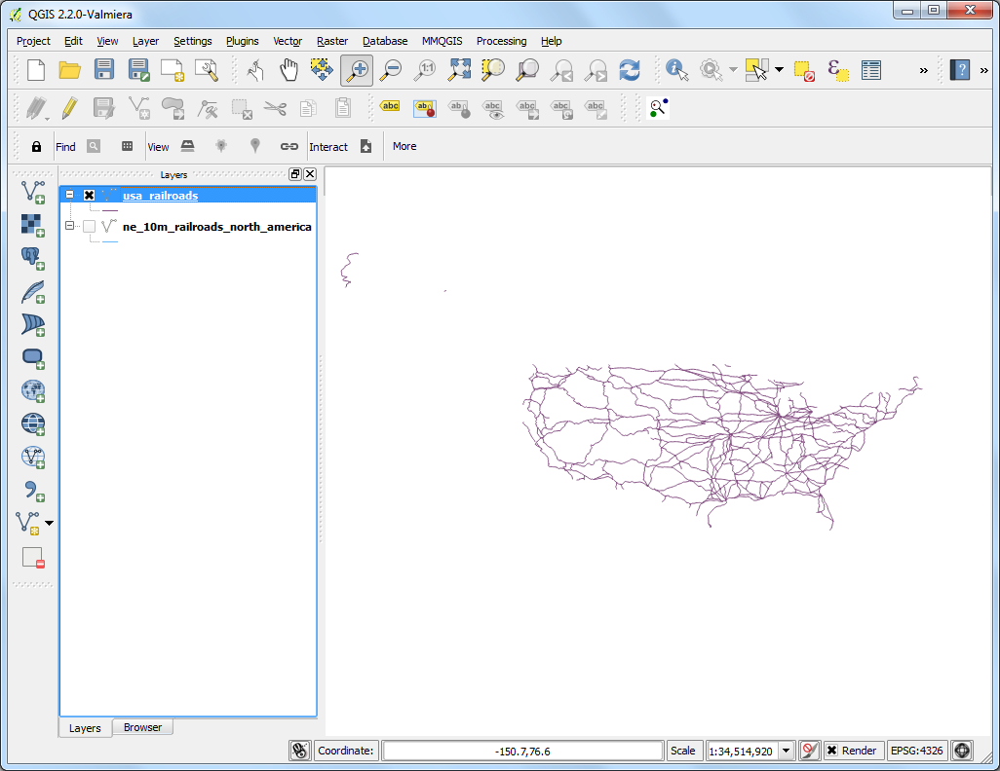
- Right-click on the usa_railroads layer and select
Open Attribute Table.
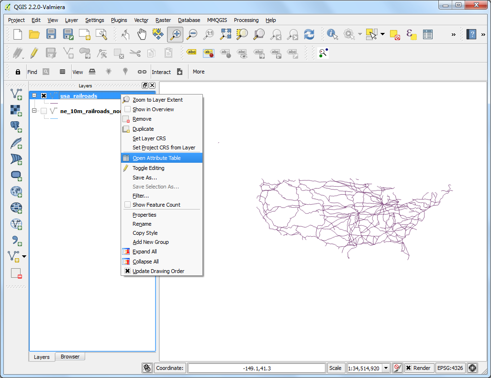
- Now it is time to add a column with length of each feature. Put the layer
in editing mode by clicking on the Toggle editing button. Once
in editing mode, click the Open field calculator button.
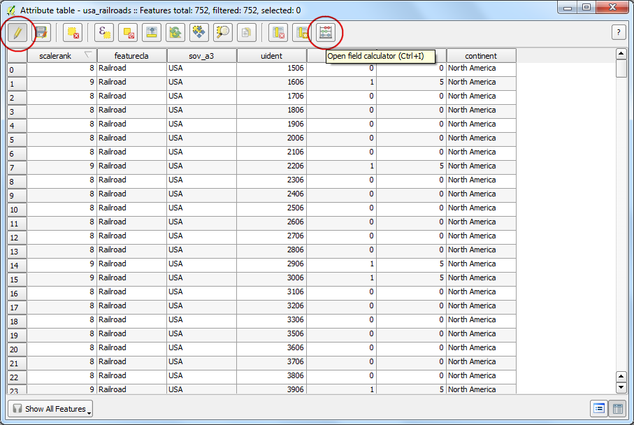
- In the Field Calculator, check Create a new
field. Enter length_km as the Output field name. Choose
Decimal number (real) as the Output field type. Change the
output Precision to 2. In the Function list
panel, find the $length under Geometry.
Double-click it to add it to the Expression. Complete the
expression as $length / 1000 because our layer CRS is in meters
unit and we want the output in km. Click OK.
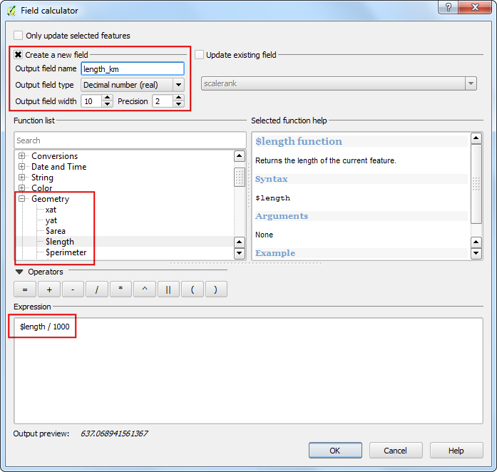
- Back in Attribute Table, you will see a new column
length_km appear. Click the Toggle editing button
to save the changes to the attribute table.
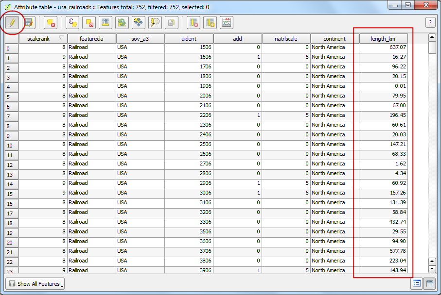
- Now that we have length of each individual line in our layer, we can easily
add it all up and find the Total length. Go to .
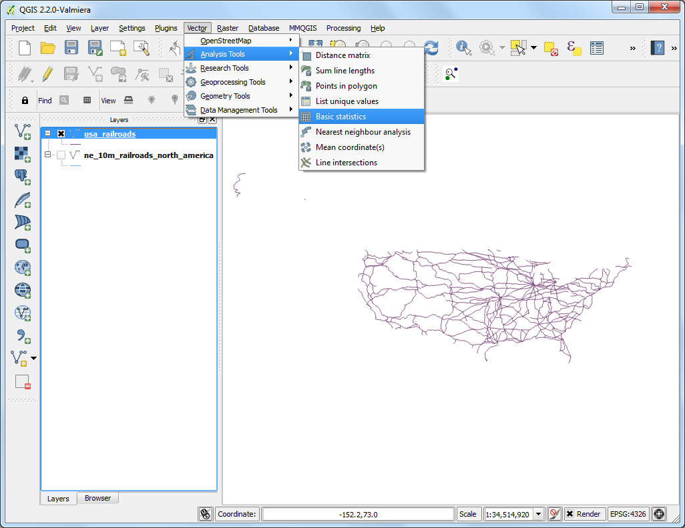
- Select the Input Vector layer as usa_railroads. Choose the
Target field as length_km and click OK. You
will see various statistics appear. The Sum value is the total
length of the railroads that we are looking to find.
Nota
This answer will vary slightly if a different projection is chosen.In
practice, line lengths for roads and other linear features are measured on
the ground and provided as attributes to the dataset. This method works in
absence of such attribute and as an approximation of actual line lengths.
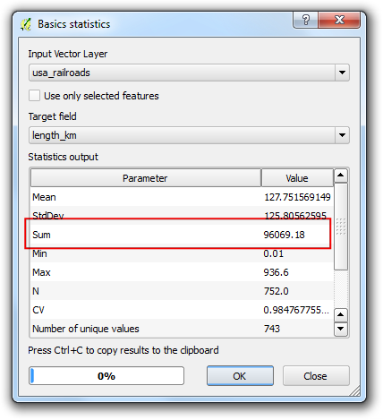